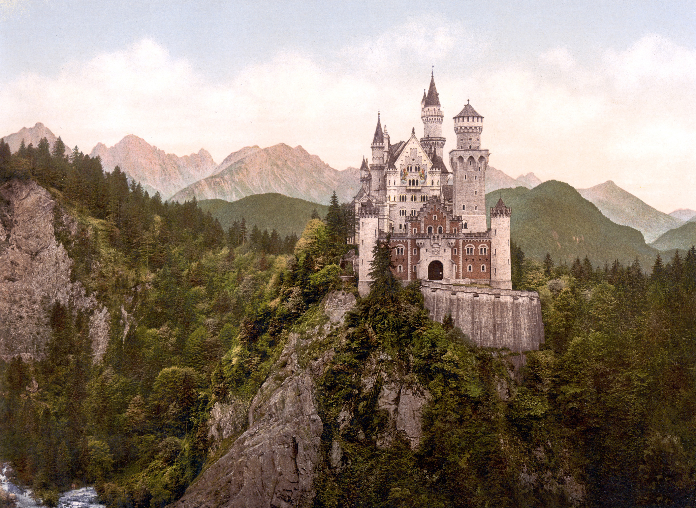
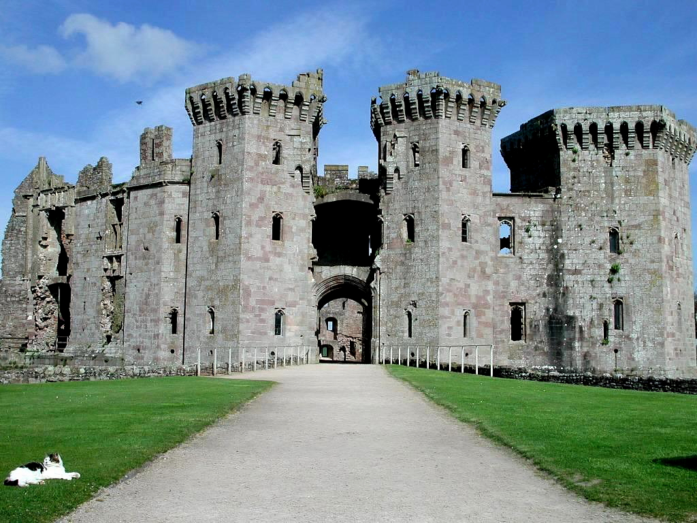

Palaces, Towers, and Castles for Sale
Mamure Castle
This castle in Turkey is a renovator's dream! With beautiful coastal views and open air courtyards Mamure Castle could be your new home. All it takes for this historical beauty to become a masterpiece is a little bit lof love!
Special Features
-
39 Towers
-
Moat
-
Three main courtyards
-
Turkish bath

Château de Chambord
Château de Chambord is reknowned for astounding architecture of graceful spires and grand hallways. This palace brags lavish lawns of everlasting green grass and sparkling facades. Let Château de Chambord welcome you like the royalty you are.
Special Features
-
Assymetrical design
-
Double helix staircase
-
More than 800 sculpted columns

Neuschwanstein Castle
This German castle is perched high on a hill, displaying its regal beauty. From elegent throne rooms to sumptuous suites, Neuschwanstein Castle is made for a buyer used to grand living. It boasts views of lakes and the gorgeous Alpine foothills.
-
Fashioned in high-constrast colours
-
Hall of Singers
-
Chapel-keep

Rapunzel's Tower
Rapunzel's Tower is the perfect model of an story book towers. This tower holds painted high ceilings, a view of neighbouring lands, and a collection of unique windows. Don't be afraid to let your hair down and call this tower your new home.
-
Hook to hand long hair
-
Climable stone base
-
Designed so singing can be heard far away

Raglan Castle
Don't let Raglan Castle's stoic demeanour turn you away from this stunning deal. Its charming ruins hold interest for any buyer intersted in artifacts of old and mystery. Hidden jewels might just be waiting around the next wall's corner...
-
Fountain Court
-
Gatehouse
-
Great Tower
